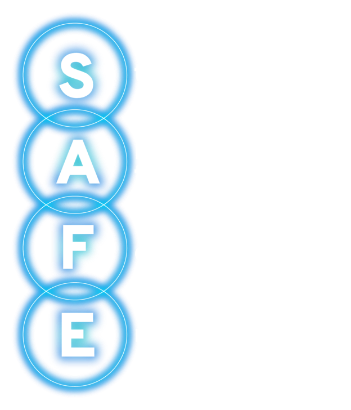
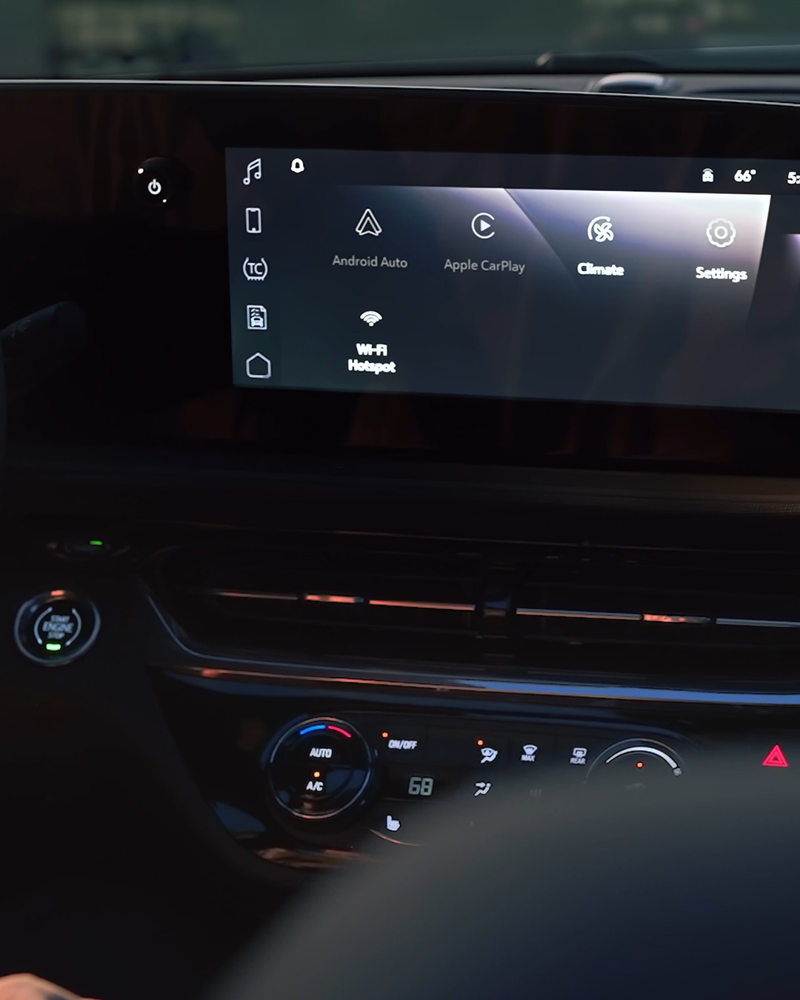

Renewable energy and economic impact
A GM infographic presents energy and project-impact figures. Read the pictured periods and qualifications alongside the figures.
![GM renewable-energy infographic. Total contracted renewable capacity through 2026: 1.5 GW. GM's attributed 2024 renewable generation is equivalent to powering 260,000 homes annually, nearly all occupied housing in Detroit, Michigan. Projects in operation, 2015-2024: $1.9 billion in GDP generated, 1,528 construction jobs created per year, and 65 operational jobs supported per year. Scheduled projects, 2025-2026: $333 million in GDP generated, 1,500 construction jobs created per year, and 28 operational jobs supported per year. The graphic also states reduced greenhouse gas emissions and stronger grid reliability. Economic and fiscal impacts include direct, indirect, and induced effects of GM's renewable-energy investments.](../assets/image-01.png)
SAFE reminders for hands-free driver assistance
This graphic presents GM's four SAFE reminders. Hands-free driver assistance is not autonomous driving; the driver remains responsible for driving safely.

Buick Envista center-screen interface
A still image from the Envista interior gallery shows an example of the center-screen layout. Pictured controls are not proof of equipment or service availability on every vehicle.

Vehicle-to-grid in action
A GM graphic outlines potential uses and benefits of bidirectional energy. It does not guarantee availability or savings for a particular vehicle, home or utility.
![Vehicle-to-Grid in Action. Send power to your home during outages; help utilities manage electricity demand; earn incentives for sending power back to the grid; flexible clean energy means lower emissions for everyone. Why V2G matters: supports electric grid resiliency; reduces dependence on centralized power plants and important fuels; lower energy costs for EV owners; provides backup power for homes, business and critical services; enables more renewable energy and speeds up transition to a sustainable future.](../assets/image-04.jpg)